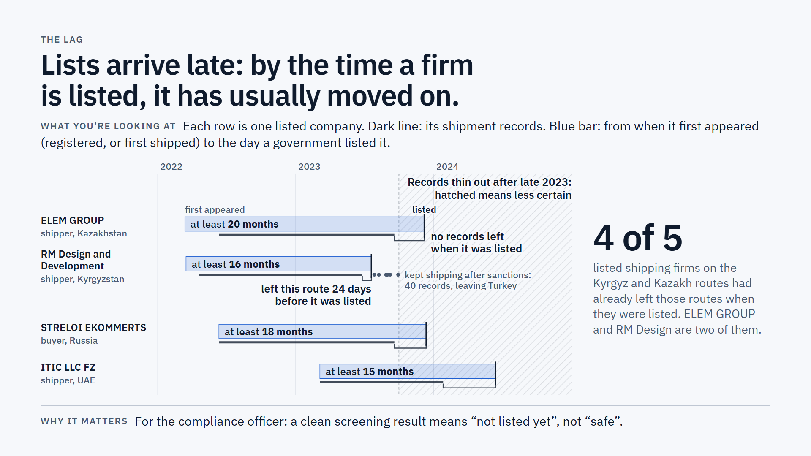
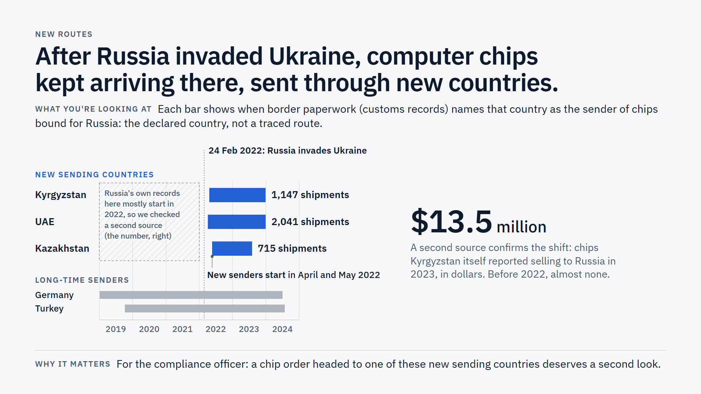
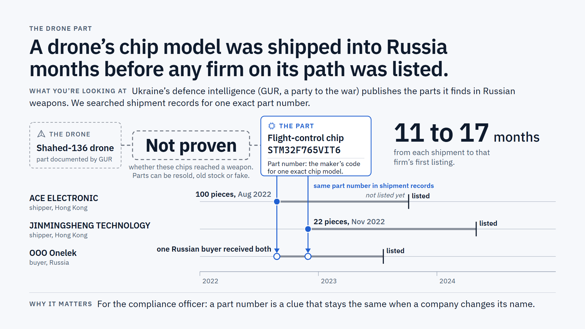

An AI-native terminal that traces ownership and trade-path risk in real time — built on Sayari, Tradeverifyd and Tavily data, checked against UN Comtrade and official sanctions lists.
Get startedFirms, filings and lobbying ties, joined into one graph — from the team's knowledge-graph research branch.
Listed companies lobbying through clean intermediaries — the live research graph, embedded from the team's build materials.


